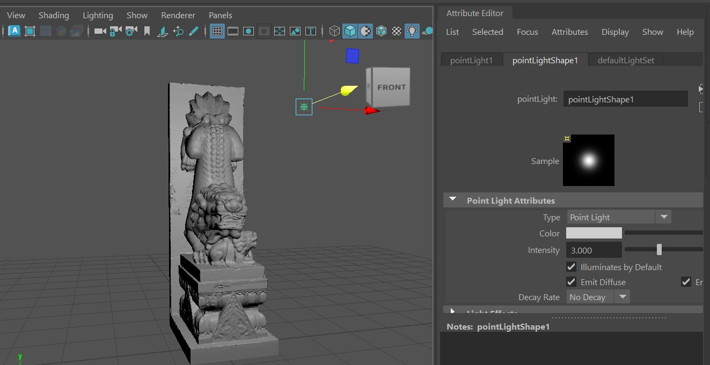
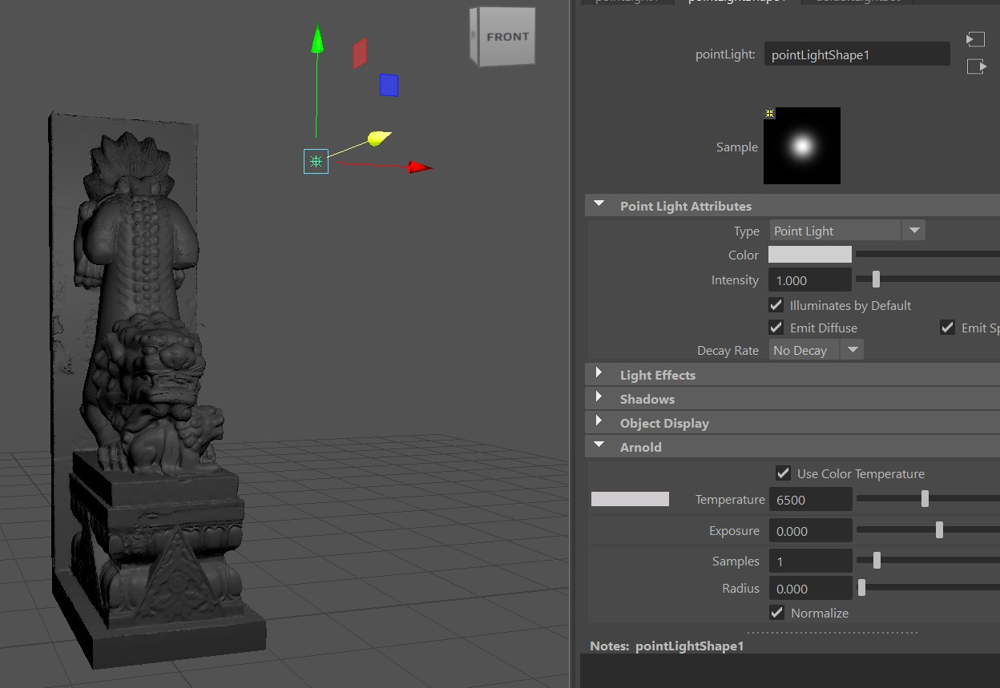
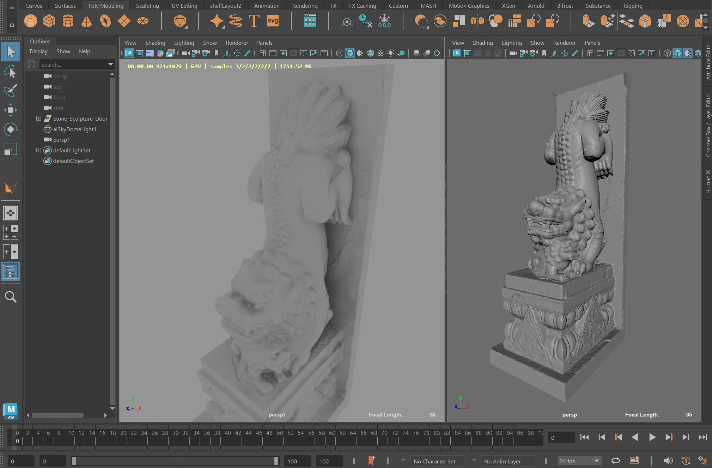
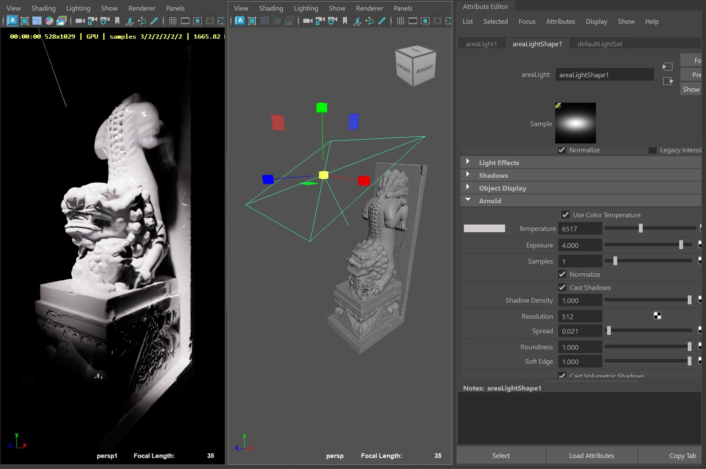
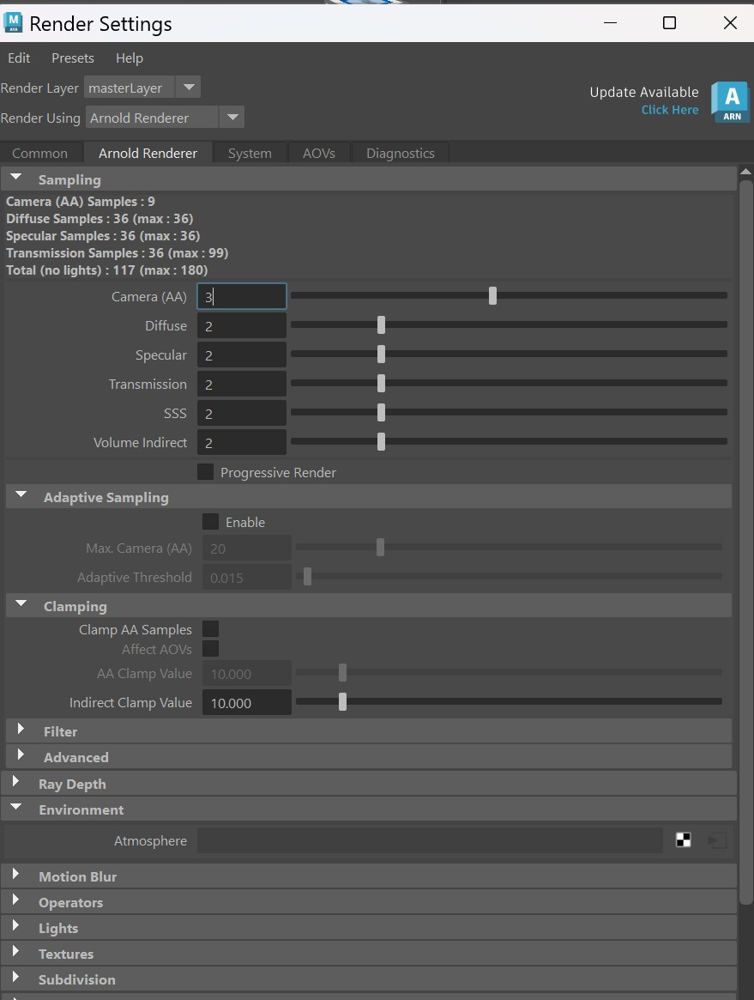

Curso ofrecido por CREA
Iluminación en Maya 3D con Arnold Renderer
Domina el comportamiento de la luz y optimiza tus renders. Nivel Básico-Intermedio.
Tu Ruta de Aprendizaje
Control y Ajuste de Luces
Render Sampling y Optimización
Módulo 1: Introducción a la Iluminación en Maya con Arnold
¿Qué es Arnold Renderer y por qué usarlo?
Arnold es un motor de renderizado por trazado de rayos (ray tracing) basado en la física, integrado nativamente en Maya. Su ventaja principal es el fotorrealismo: en lugar de usar trucos visuales, calcula cómo rebotan los fotones de forma matemática, produciendo resultados profesionales con menos esfuerzo manual.
Tipos de luces disponibles
Accede a ellas desde: Arnold > Lights en el menú superior.
- Point Light: Emite luz en todas las direcciones desde un punto infinitamente pequeño. Ideal para focos desnudos o bombillas.
- Area Light: Emite luz desde una superficie plana. Genera sombras suaves y realistas. La más usada en producción.
- Directional Light: Simula una fuente lejana con rayos paralelos (como el sol). Solo importa su rotación, no su posición.
- Spot Light: Proyecta luz en forma de cono. Ideal para destacar objetos específicos.
- Mesh Light: Convierte cualquier geometría 3D en fuente de luz.
- Skydome Light: Esfera gigante que rodea la escena para iluminación global con HDRI.

Parámetros básicos de iluminación
Al seleccionar una luz, el Attribute Editor muestra:
- Color: Tono de la luz. Puedes usar paleta RGB o activar "Color Temperature" en grados Kelvin. (3200K = luz cálida de interior / 6500K = luz de día)
- Intensity: Multiplicador base de la fuerza de la luz.
- Exposure: Controla la potencia en pasos fotográficos. +1 de exposición duplica la luz. Es el control principal de brillo en Arnold.

Módulo 2: Control y Ajuste de Luces
Area Light vs Point Light vs Skydome
- Point Light: Sombras duras y nítidas por su tamaño puntual. Útil para brillos especulares precisos.
- Area Light: A mayor tamaño físico, sombras más suaves. Esencial para iluminación de estudio y retratos.
- Skydome Light: Sin un Skydome activo, las áreas en sombra serán completamente negras (cero rebote ambiental).
HDRI con Skydome
Conecta una imagen HDRI al Skydome para que Arnold lea los píxeles brillantes de esa imagen y proyecte luz y reflejos realistas sobre tus modelos. El HDRI no solo es fondo: es la fuente de iluminación completa.

Mesh Light
Selecciona tu geometría > Arnold > Lights > Mesh Light. A diferencia del material emisivo, la Mesh Light usa muestreo directo de luz, reduciendo drásticamente el ruido en el render.
Three-Point Lighting
- Key Light: Fuente principal, más potente. Colocada diagonalmente al sujeto. (Generalmente una Area Light)
- Fill Light: Menos potente, en el lado opuesto a la Key. Suaviza las sombras oscuras que deja la luz principal.
- Rim Light: Detrás del sujeto. Crea un borde brillante que lo separa del fondo, dando volumen y profundidad.

Módulo 3: Render Sampling y Optimización
¿Qué son los Samples?
Arnold dispara rayos desde la cámara para recolectar información de luz y color. Menos samples = render rápido con ruido. Más samples = imagen limpia, más tiempo. La clave no es subir todo al máximo, sino atacar el tipo específico de ruido de tu escena.
Panel de Sampling (Render Settings > Arnold Renderer)
- Camera (AA): Multiplicador maestro. Controla el antialiasing y multiplica todos los valores de abajo. Subirlo limpia toda la imagen pero dispara el tiempo.
- Diffuse: Limpia ruido en rebotes de luz indirecta y sombras suaves.
- Specular: Limpia ruido en brillos, reflejos metálicos y vidrios.
- Transmission: Para objetos translúcidos y refractivos (cristales, agua).
- SSS: Elimina ruido en materiales donde la luz penetra: piel, cera, mármol.
- Volume Indirect: Controla el ruido en volumétricas (humo, niebla, nubes).

Valores recomendados
- LookDev / pruebas rápidas: Camera AA en 2–3, resto en 2.
- Render final (producción media): Camera AA en 4–5, Diffuse y Specular entre 2–4 según materiales de la escena.
- Regla clave: si el ruido está solo en reflejos, sube Specular — no el Camera AA.
Progressive Render
Dibuja la imagen rápidamente en baja calidad y se va refinando en tiempo real. Fundamental para trabajar con el IPR y ver cambios de luz sin esperar renders completos.
Quiz: Módulo 1
⏱15:00
Quiz: Módulo 2
⏱15:00
Quiz: Módulo 3
⏱15:00
🎉
¡Felicidades!
Has completado todos los módulos exitosamente.
CONSTANCIA DE FINALIZACIÓN DE MÓDULOS
Este documento certifica que el titular ha completado exitosamente la ruta de aprendizaje online y ha aprobado todas las evaluaciones del curso técnico:
"Iluminación en Maya 3D con Arnold Renderer"
Conocimientos acreditados:
- Fundamentos de Arnold Renderer y atributos fotográficos
- Esquemas de iluminación y configuraciones de entorno (Three-Point Light y HDRI)
- Optimización de render y diagnóstico de Sampling
Estudiante: ____________________
Fecha: ____________________
____________________
Firma del Instructor
Aprobado